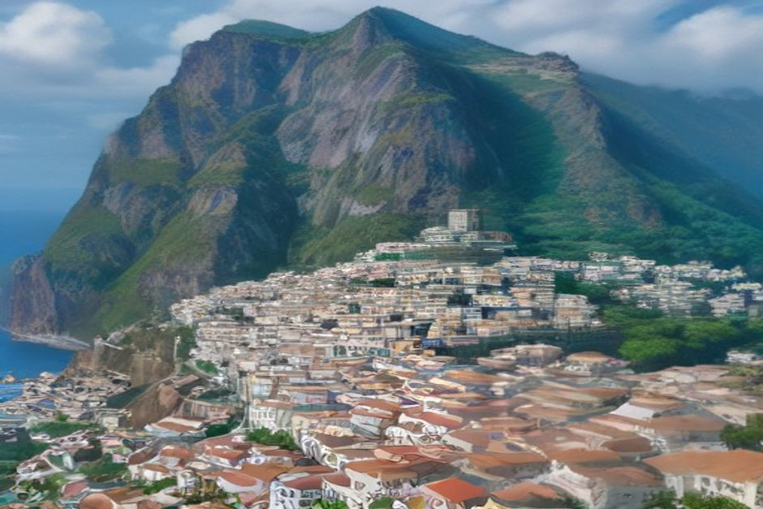
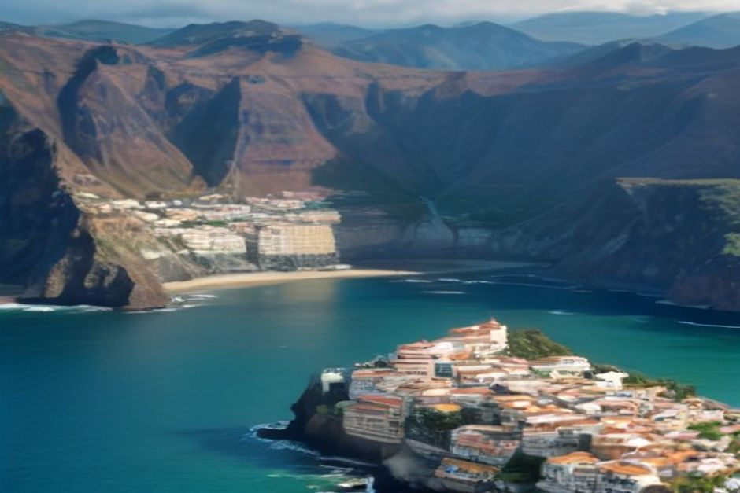

No, Madeira non è pericolosa nel senso in cui di solito si intende la domanda: la criminalità è bassa e la maggior parte delle vacanze passa senza il minimo problema. I rischi esistono, ma sono quelli di un'isola montuosa nell'Atlantico: strade ripide, sentieri esposti, mare che cambia. Vediamo dove si trova, come arrivarci e come muoversi con testa.
Dove si trova Madeira e perché conta per la sicurezza
Madeira è un'isola portoghese in pieno Atlantico, e il Portogallo è uno dei paesi più sicuri al mondo: secondo il Global Peace Index sta stabilmente nei primi dieci. Per voi dall'Italia significa euro, nessuna formalità particolare da cittadini UE e il 112 come numero di emergenza, lo stesso di casa.
La posizione spiega però anche i rischi. È un'isola vulcanica nata dal mare: si passa dal livello dell'oceano alle cime centrali in pochi chilometri. Ed è questo, non la gente, a richiedere attenzione. Funchal, la capitale, è sulla costa sud ed è la base di quasi tutti i visitatori.
Aeroporto di Madeira e arrivo dall'Italia, anche da Roma
Chi cerca "come arrivare a Madeira da Roma" di solito scopre che i collegamenti diretti dipendono dalla stagione e dalla compagnia. Controllate le offerte aggiornate: in alternativa si arriva con uno scalo, per esempio a Lisbona.
L'aeroporto di Funchal è collegato alla città e alla costa ovest dalla VR1, la superstrada moderna dell'isola. Il vento può rendere gli atterraggi più delicati: tenete un margine nei programmi del primo e dell'ultimo giorno, e non prenotate impegni rigidi appena sbarcati.
La criminalità: cosa aspettarsi davvero
La criminalità violenta contro i turisti è rara e a Funchal e nelle zone turistiche si vede una presenza di polizia attenta ai visitatori. Il crimine non è zero, però. Qualche borseggio può capitare dove c'è folla, come il Mercado dos Lavradores o le vie del centro durante le feste.
Il furto più tipico riguarda le auto a noleggio lasciate ai parcheggi dei sentieri: non lasciate mai borse, macchine fotografiche o documenti in vista. Le vere truffe sono poco comuni. Più probabile è un menu caro in un locale rivolto ai turisti di passaggio.

Viaggiare da soli o da sole: le donne a Madeira
Madeira è spesso citata tra le mete più sicure d'Europa per chi viaggia da solo, comprese le donne. La gente del posto è abituata a visitatori indipendenti che girano a piedi, in autobus o in auto.
Valgono le precauzioni da qualsiasi città europea. Di sera preferite le strade illuminate di Funchal. Tenete la borsa chiusa e il telefono fuori dalle tasche posteriori nei vicoli affollati della Zona Velha. Dopo il tramonto usate taxi autorizzati o app di trasporto, non auto senza insegne. Molti viaggiatori soli dicono di preoccuparsi più di un sentiero bagnato sulla scogliera che di una passeggiata notturna.
Guidare a Madeira: il rischio quotidiano più concreto
I tre rischi che causano davvero problemi sono strade, sentieri e mare. La strada viene per prima. La VR1 tra Funchal, l'aeroporto e la costa ovest è moderna e ben fatta. Le strade secondarie, le ER, che salgono in montagna e corrono sulla costa nord, sono strette, ripide, piene di tornanti, gallerie e curve cieche con il vuoto da un lato.
- Si guida a destra, come in Italia, e il noleggio è facile da trovare.
- Una macchina piccola è più semplice da gestire di un grosso SUV.
- Evitate le strade di montagna sconosciute di notte o con la nebbia.
- Attenzione a ciclisti e scooter nelle curve cieche.
- Non fidatevi dei tempi sulla mappa: in pratica sono quasi sempre più lunghi di quanto i chilometri facciano pensare.
Sentieri e levadas: belli, ma non tutti innocui
Alcuni tratti sono davvero impegnativi e vanno presi sul serio. Certi percorsi, come i tratti esposti del PR1 verso il Pico do Arieiro e alcune levadas più vecchie, costeggiano scogliere senza protezioni, attraversano gallerie al buio o passano su terreno che diventa scivoloso con la pioggia.
- Restate sui sentieri PR segnalati ufficialmente.
- Controllate il sistema SIMplifica prima di partire: segnala anche le chiusure dopo frane o tempeste.
- Portate una torcia frontale per le gallerie.
- Scarpe con buona suola, non sandali.
- Tornate indietro se il sentiero è più bagnato o stretto del previsto.
- Sui percorsi più esposti evitate di andare da soli.
Le passeggiate facili e adatte alle famiglie, come Ribeiro Frio verso i Balcões, non hanno nessuno di questi problemi.
Il mare di Madeira: dove fare il bagno e dove no
Dipende dal posto e dal giorno. Madeira ha quasi solo spiagge rocciose o di ciottoli, e si nuota in baie di roccia e piscine naturali vulcaniche. Dove non c'è sorveglianza, onde, correnti e ondate improvvise possono essere pericolose, soprattutto in inverno e dopo le tempeste atlantiche.
Le spiagge con bagnino, come Praia Formosa e Calheta, sono la scelta più sicura per un bagno tranquillo, con le bandiere che indicano le condizioni. Le baie aperte della costa sud sono più calme e limpide d'estate, ma conviene visitarle con chi legge il mare per mestiere.
È il motivo per cui, sulle uscite private di Chifbay, il bagno si fa solo dopo che lo skipper ha verificato che la baia sia riparata e le condizioni giuste. Non c'è un orario fisso da rispettare a ogni costo.
Sulla barca, in sicurezza: come funziona da noi
Chifbay è una compagnia privata di Funchal: la barca è solo per il vostro gruppo, fino a 5 persone, con due skipper abilitati di Madeira, su un Karnic R8S del 2026. Il punto d'incontro è la Marina do Funchal, pontile C.
L'uscita di giorno parte alle 10:00 o alle 14:00. Sono 2 h 30 fino a Ribeira Brava per 500 EUR, oppure 3 h fino a Ponta do Sol per 600 EUR. Si passa da Câmara de Lobos e Cabo Girão, con bagno e paddle board alla Fajã dos Padres.
Il tramonto parte 1 h 15 prima del calar del sole, tutto l'anno: 2 h fino a Cabo Girão per 400 EUR, oppure 2 h 30 fino a Ribeira Brava per 500 EUR, senza sosta per il bagno. I prezzi valgono per tutta la barca, mai per persona.
Su ogni uscita sono inclusi cibo e bevande a bordo, un video a 360° Insta360, riprese con drone (se il tempo lo permette) e foto fatte con una vera macchina fotografica. La cancellazione è gratuita fino a 24 ore prima della partenza. Delfini, balene, luce dorata e bel tempo non si promettono: sono un regalo quando capitano. Per confrontare le opzioni c'è la pagina sulle migliori gite in barca a Madeira.

Terremoti, vulcani e maltempo
Nessun rischio vulcanico significativo e terremoti rari e leggeri. Madeira è un'isola vulcanica dormiente, senza eruzioni nella storia documentata, in una zona relativamente stabile del centro dell'Atlantico, lontana dalle grandi faglie.
Il pericolo meteo da tenere d'occhio è la pioggia forte. Tempeste intense hanno causato in passato alluvioni lampo e frane, la più nota nel febbraio 2010. Durante il soggiorno guardate gli avvisi dell'IPMA, il servizio meteorologico nazionale portoghese, ed evitate i percorsi ripidi e sterrati durante o subito dopo piogge intense.
Cinque abitudini che fanno la differenza
- Controllate gli avvisi IPMA prima di escursioni o di una gita in barca.
- Prenotate in anticipo i sentieri più frequentati con SIMplifica e indossate calzature adatte.
- Non fate il bagno in una baia non sorvegliata senza informarvi sulle condizioni.
- Chiudete l'auto e non lasciate oggetti di valore in vista ai parcheggi dei sentieri.
- Stipulate un'assicurazione di viaggio che copra escursionismo e sport acquatici, e salvate il 112 sul telefono prima di atterrare.
Niente di tutto questo è esclusivo di Madeira: è la disciplina che ogni destinazione di montagna e di mare richiede. Ma separa il viaggio che va come previsto da quello che non va. Altre informazioni utili sono nella pagina informazioni pratiche e nel Journal, e trovate i pareri di chi è già salito a bordo tra le recensioni.
Il pericolo a Madeira non è mai stato la gente. È sottovalutare una strada di montagna, un sentiero bagnato o il moto ondoso dell'Atlantico.
Rispettate il territorio e il mare, e Madeira vi ricambierà con uno dei viaggi più sicuri e belli d'Europa: scogliere, foreste e coste che meritano un po' di prudenza.